HeMem: Scalable Tiered Memory Management for Big Data Applications and Real NVM
This page was written by an AI model to give a high-level overview of the paper. Please check the paper for detail: ACM Digital Library.
Intel's Optane DC non-volatile memory (NVM) attaches to the memory bus next to DRAM and offers up to 8 times the capacity per module, but at up to 7 times lower bandwidth and up to twice the latency. A server with both needs a tiered memory manager that keeps frequently accessed data in DRAM and pushes the rest to NVM, without losing the capacity gain to mismanagement.
The two options available when this paper was written both fall short. Intel's own hardware tiering, Memory Mode, treats DRAM as a direct-mapped cache over NVM at cache-line granularity. It needs no OS support, but it is blind to which process owns which data, cannot prioritize between applications, and suffers conflict misses that worsen as the working set grows, pushing hot cache lines back out to NVM even when capacity alone would not require it. OS-based tiering, exemplified by Linux's Nimble NUMA extensions, instead scans page table accessed and dirty bits to find hot pages. The paper measures that this scan takes on the order of seconds once memory capacity reaches the terabyte range, and clearing the bits to re-arm the scan requires a TLB shootdown. Worse, Nimble runs scanning and migration on the same thread, so a slow migration delays the next scan and causes the system to overestimate how much memory is hot. Prior research systems such as X-Mem were evaluated only against emulated NVM, which the paper shows does not capture real Optane's performance quirks.
HeMem's key idea is to replace page-table scanning with hardware performance-counter sampling. Using Processor Event-Based Sampling (PEBS), the CPU itself logs the virtual address of a sampled load or store, tagged as served from DRAM, from NVM, or as a store, into a buffer that software reads asynchronously. This gives HeMem a continuously updated, low-overhead view of access frequency and read/write balance, without ever walking a page table or triggering a TLB shootdown to reset a bit.
HeMem is a user-space library, linked into unmodified applications via LD_PRELOAD. It intercepts mmap and related calls to manage large, long-lived heap regions, uses userfaultfd to serve page faults for those regions, and runs a PEBS thread that classifies pages as hot, cold, or write-heavy based on sampled accesses. A separate policy thread wakes every 10 ms, consults three FIFO queues of hot, cold, and free pages for each memory type, and issues batched, DMA-offloaded page migrations between DRAM and NVM. Small allocations and anything the kernel owns are simply left in DRAM, since NVM's larger media access granularity penalizes small, scattered objects.
On a machine with real Intel Optane DC NVM, HeMem outperforms Memory Mode, Nimble, and an emulated X-Mem across a graph benchmark, an in-memory database, and a key-value store. The paper reports up to 50% lower runtime for the GAP graph benchmark, up to 13% higher TPC-C throughput on the Silo database (82% over Nimble, 400% over X-Mem), up to 16% lower tail latency for a key-value store under performance isolation, and up to 10 times fewer NVM writes than the next-best system, all without modifying the applications.
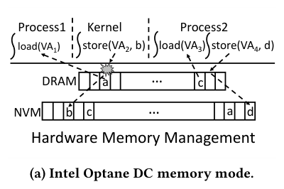
Key takeaways
- Optane DC NVM has near-DRAM latency but asymmetric, much lower bandwidth, and a 256-byte media access granularity; small random accesses and heavy writes are its weak points.
- Hardware tiering (Optane Memory Mode) has no application visibility and suffers conflict misses as a direct-mapped DRAM cache; OS page-table scanning does not scale past tens of gigabytes due to scan time and TLB shootdowns.
- HeMem replaces scanning with asynchronous PEBS sampling to classify pages as hot, cold, or write-heavy, at a fraction of the CPU cost.
- Migration is also asynchronous and batched (DMA-offloaded where available), runs on a 10 ms policy loop, and keeps small or kernel objects and write-heavy data preferentially in DRAM.
- On real Optane hardware, HeMem beats Memory Mode, Nimble, and emulated X-Mem on GAP, Silo/TPC-C, and a key-value store, and cuts NVM writes by up to 10 times, with no application changes.
From page-table scanning to PEBS-driven tiering
What makes Optane hard to manage, why scanning does not scale, and how HeMem's sampling, allocation, and migration pipeline replaces it.
1 · Optane DC as a memory tier
Optane DC NVM sits on the memory interconnect alongside DRAM and is exposed to the OS in one of two modes: Memory Mode, where DRAM becomes a hardware-managed direct-mapped cache invisible to software, or App-Direct mode, where NVM appears as separately addressable physical memory the OS can manage explicitly. HeMem uses App-Direct mode. The paper's Table 1 summarizes the asymmetry that any tiering system must account for.
| Memory | R/W latency | R/W bandwidth (GB/s) | Capacity (relative) |
|---|---|---|---|
| DDR4 DRAM | 82 ns | 107 / 80 | 1x |
| Optane DC | 175 / 94 ns | 32 / 11.2 | 8x |
Optane's read latency is noticeably higher than DRAM's, while its apparent write latency is lower because writes land in an on-DIMM buffer before reaching the media. The real cost shows up in bandwidth: Optane write bandwidth is under a seventh of DRAM's, and it saturates with only a few concurrent threads.
2 · Characterizing real Optane behavior
The paper runs a microbenchmark that performs cached 256-byte loads and stores to DRAM or Optane in sequential or random patterns, scaling the thread count and then the access size.
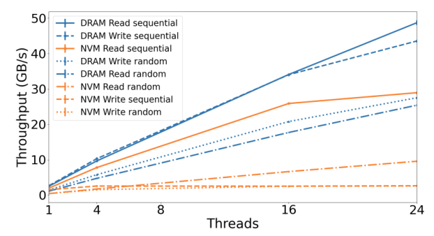
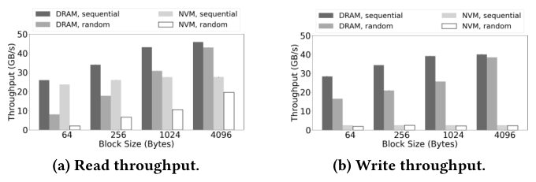
Optane write bandwidth saturates at four threads regardless of access pattern; at scale, DRAM's random and sequential write throughput are 10.7x and 16.5x higher than Optane's. Optane random reads scale somewhat with more threads but remain 2.7x below DRAM's random read throughput, while sequential Optane reads can exceed DRAM's random read throughput by 14%. Varying access size at 16 threads shows that small random reads and writes are especially slow on both memory types, but Optane's 256-byte media access granularity adds further overhead below that size, and its read bandwidth is already saturated regardless of block size. The paper draws three design lessons from this: writing to Optane is expensive, small random accesses to Optane are expensive, and there is spare bandwidth available in the common case to migrate data in the background without hurting applications.
3 · Why page-table scanning does not scale
Traditional OS tiering policy reads page table accessed and dirty bits to find hot and written pages. The paper measures the time to scan these bits as mapped memory grows, for base, huge, and gigabyte pages.
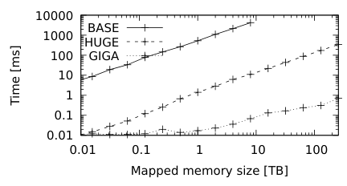
Scanning is fast for tens of gigabytes but takes on the order of seconds once capacity reaches the terabyte range, even at huge page granularity, and clearing bits to re-arm the scan requires TLB shootdowns. A slow scan also degrades fidelity: by the time it finishes, it tends to find most bits set, overestimating the hot set. This motivated HeMem's shift away from scanning.
4 · Three ways to integrate NVM, and why HeMem picks the third
| Approach | Granularity / control | Main limitation |
|---|---|---|
| Hardware Memory Mode | Cache line; fully hardware-managed, no OS visibility | Direct-mapped cache causes conflict misses that grow with occupancy; no per-process or per-object policy |
| Kernel-managed NUMA (e.g. Nimble) | Page; NVM exposed as a distant NUMA node, migrated asynchronously | Relies on page-table scanning; sequential scan-then-migrate on one thread delays and skews hot-set detection |
| User-level library (HeMem) | Page; library intercepts allocation and faults, PEBS-driven | Needs kernel support for write-protect faults on DAX-backed memory |
HeMem follows the library approach already used by systems that expose NVM directly to applications (such as PMDK and libmemkind), but, unlike those, requires no special allocator API, no code changes, and no separate profiling pass: ordinary mmap calls are enough.
5 · Asynchronous access sampling with PEBS
A dedicated PEBS thread continuously drains a hardware-filled sample buffer, configured to capture loads served from NVM, loads served from DRAM, and all stores, each tagged with the faulting virtual address. This avoids both the scanning cost and the TLB shootdowns of bit-clearing. The sampling period trades fidelity for overhead: too frequent, and the PEBS thread cannot keep up and drops samples; too infrequent, and the view of access patterns becomes stale.
- A page accumulates separate read and write access counts as its address range is sampled.
- A page is marked hot once its count passes a threshold (8 loads or 4 stores, found experimentally) and is moved to the hot list for its current memory type.
- A page that crosses the store threshold is additionally flagged write-heavy and moved to the front of its hot list, giving it priority for migration to DRAM ahead of read-heavy pages.
- Periodically, once total sampled accesses cross a cooling threshold (18 in the prototype), all tracked counts are halved; a page that falls back below the hot threshold is reclassified cold. A clock-based scheme avoids re-scanning every tracked page on every cooling event.
6 · Allocation and placement
- HeMem intercepts
mmapto learn the size of new memory ranges; large (and growing-large) ranges, the kind that benefit from tiering, are managed by HeMem, while small allocations are left to the kernel and so remain in DRAM. - DRAM and NVM are each backed by a DAX (direct-access) file, giving HeMem a byte-addressable, page-mappable region of each memory type.
- New pages are served from DRAM's free list while it has capacity; once DRAM free space drops below a watermark (1 GB in the prototype), the policy thread forces migrations, preferring cold DRAM pages, or picking pages at random if none are cold, to free space for new allocations.
- Kernel objects and program text are deliberately left outside HeMem's management: they are small, often ephemeral, or static, and gain little from tiering.
7 · Migration
- Every 10 ms, the policy thread scans the DRAM cold list and the NVM hot list and selects pages to swap, prioritizing write-heavy pages for migration into DRAM.
- Before copying, the target page is marked write-protected via
userfaultfd; reads still proceed, but a concurrent write stalls until the copy finishes, which the paper measures as happening on fewer than 0.00013% of writes in its most write-heavy benchmark. - Copies are offloaded to an Intel I/OAT DMA engine through a custom
ioctlinterface that batches up to 32 copy requests and parallelizes them across DMA channels (4 requests over 2 channels is the fastest configuration found); without a DMA engine, 4 software copy threads are used instead. - A migration rate cap (10 GB/s in the prototype) bounds how much background migration traffic can compete with application memory traffic.
- If the hot set exceeds DRAM capacity, there are no cold DRAM pages to swap out, so HeMem simply stops migrating rather than thrashing.
8 · Page fault handling
A dedicated fault-handling thread reads userfaultfd events. A missing-page fault is served by mapping a zero-filled page from whichever memory type the current allocation policy selects. A write-protection fault, raised only on pages mid-migration, simply blocks the faulting thread until the copy completes, then lets the write proceed.
9 · Implementation
HeMem is built on Linux 5.1.0, with two kernel patches: an existing patch adding userfaultfd write-protection fault support, and a new patch (1,337 added lines) that forwards DAX page faults and write-protection events to userfaultfd instead of handling them in the kernel. The user-space library, libhemem, is 4,177 lines of C, loaded via LD_PRELOAD and intercepting system and library calls with libsyscall_intercept. DRAM for HeMem is itself reserved via a DAX file sized by the kernel memmap boot argument, rather than carved out of the normal kernel allocator.
Measured results for all of these mechanisms, including overhead breakdowns and sensitivity to HeMem's thresholds, are in the Evaluation tab.
Evaluation
Microbenchmark breakdowns with GUPS, then application-level results on Silo/TPC-C, FlexKVS, and the GAP graph benchmark, against real Optane DC NVM.
All experiments run on one socket of a dual-socket Intel Cascade Lake-SP machine, pinned to a single NUMA node to keep NUMA effects out of scope. The socket has 24 cores at 2.2 GHz, 192 GB of DDR4 DRAM, and 768 GB of Optane DC NVM, each across 6 DIMMs, running Debian 10.9 with Linux 5.1.0rc4.
| What | Value in the paper |
|---|---|
| Workloads | GUPS microbenchmark (uniform and skewed random update patterns); Silo in-memory database running TPC-C; FlexKVS key-value store; GAP graph benchmark's betweenness centrality (BC) on Kronecker power-law graphs |
| Baselines | Intel Optane Memory Mode (MM), Linux Nimble, X-Mem (emulated by placing data directly in NVM), and DRAM-only / NVM-only references |
| Metrics | GUPS (giga updates per second), transaction throughput and latency, KVS operation throughput and tail latency, BC iteration runtime, NVM write counts |
With no hot/cold skew, HeMem tracks DRAM and MM closely, then pulls ahead as the working set approaches DRAM capacity
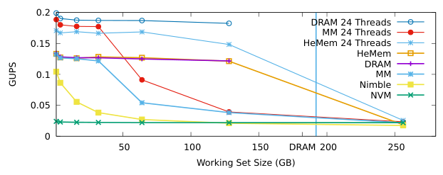
What it shows. GUPS throughput versus working set size, up to 256 GB, under uniform random access with 16 threads (an inset also shows 24 threads), for DRAM-only, MM, HeMem, Nimble, and NVM-only. At working sets at or below 32 GB, HeMem and MM match DRAM-only performance, since both keep the data in DRAM. As the working set approaches DRAM's capacity, MM's throughput degrades from increasing conflict misses; at 128 GB, HeMem delivers 3.2x the GUPS of MM. Nimble reaches at most 78% of MM/HeMem's GUPS and degrades further as the working set grows. Once the working set exceeds DRAM, all tiered systems converge to NVM-only performance. With 24 threads, HeMem reaches up to 3.7x MM's throughput near the DRAM/NVM boundary, but is about 10% slower than MM at small working sets due to thread contention with its background threads.
What to take from it. HeMem's conflict-miss-free, software-managed placement matters most exactly where MM's direct-mapped cache hurts most: near the DRAM capacity boundary. With no hot set to exploit (pure uniform access), none of the tiered systems beat NVM-only once the working set exceeds DRAM, which the paper treats as expected and not a failure of the design.
When a hot set exists, HeMem keeps it in DRAM far better than MM as the hot set grows
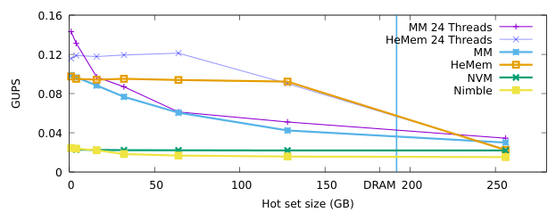
What it shows. GUPS versus hot set size (1 to 256 GB) within a fixed 512 GB working set, where each thread sends 90% of accesses to its own hot objects. Because 10% of accesses still go to NVM even when the hot set fits in DRAM, overall throughput is 27% lower than the uniform case in Result 1. As the hot set approaches DRAM capacity, MM's performance degrades from more conflict misses pushing hot data to NVM, while HeMem continues to identify and retain the hot set; HeMem performs up to 2x better than MM for hot sets larger than 8 GB. Nimble achieves only 25% of MM/HeMem's GUPS even when the hot set fits in DRAM, reflecting its scan-and-migrate overhead. With 24 threads, MM is up to 24% faster than HeMem for hot sets under 8 GB, but HeMem again reaches up to 2x MM's throughput for larger hot sets. Once the hot set itself exceeds DRAM, all systems converge, since HeMem detects there is nothing further to usefully migrate.
What to take from it. This is the central scenario HeMem is built for: a hot set that fits in DRAM but is surrounded by a much larger cold working set. MM's hardware caching degrades under exactly this condition, while HeMem's sampling-based classification does not.
Page-table scanning overestimates the hot set badly; PEBS sampling comes within 6% of a hand-tuned placement
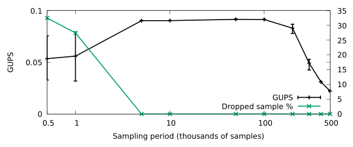
What it shows. GUPS under six configurations with a 512 GB working set and a 16 GB hot set: Opt (hot set manually placed in DRAM, no tracking or migration), PEBS (sampling only, migration disabled), PT Scan (page-table accessed/dirty-bit scanning instead of PEBS, migration disabled), PEBS+Migrate (full HeMem), PT Scan+M.Sync (single-threaded sequential scan-then-migrate, as in Nimble's design), and PT Scan+M.Async (page-table scanning on a separate thread from migration). PT Scan is 18% slower than PEBS even with migration disabled, from TLB shootdown costs. PEBS+Migrate is within 5.9% of Opt. PT Scan+M.Sync reaches only 18% of Opt's throughput, because migration delays the next scan and the system ends up treating nearly the entire 512 GB working set as hot. Separating scanning onto its own thread (PT Scan+M.Async) more than doubles throughput over M.Sync but still reaches only 43% of Opt, still misclassifying up to 300 GB as hot against a true 16 GB hot set.
What to take from it. The gap between PEBS and either page-table-scanning configuration is HeMem's core argument in microbenchmark form: scanning's overhead so badly delays and skews hot-set detection that even a well-threaded scanning design falls far short of sampling.
After a hot-set shift, HeMem and MM recover within 20 seconds; page-table-based HeMem never does
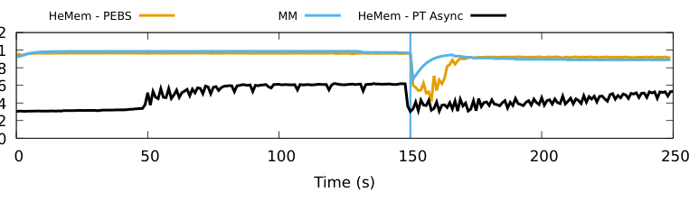
What it shows. Instantaneous GUPS over time for a 512 GB working set with a 16 GB hot set, where after 150 seconds, 4 GB of the hot set is swapped for 4 GB of previously cold data, for HeMem (PEBS), MM, and HeMem configured to use asynchronous page-table scanning instead of PEBS. All systems but the page-table variant start at high throughput post-warm-up, since the hot set is fully in DRAM. All three dip sharply at the 150-second mark as newly hot data is initially served from NVM. HeMem and MM both identify the new hot data and recover throughput within 20 seconds; MM's cache-line-granularity migrations keep it slightly higher during the recovery window. HeMem's page-table-scanning variant never recovers, settling at 54% of HeMem/MM's post-recovery throughput.
What to take from it. PEBS sampling is fast enough to make HeMem competitive with a pure-hardware mechanism (MM) at reacting to a changing hot set, something page-table scanning cannot do at this memory scale.
On an in-memory database, HeMem beats MM once the dataset is large enough to stress hardware caching, but trails it once it exceeds DRAM
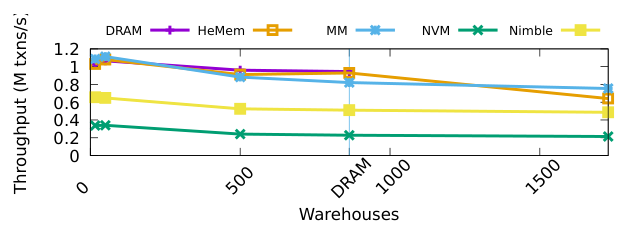
What it shows. Average TPC-C transaction throughput in Silo as the number of simulated warehouses scales the working set from 16 to 1,728 warehouses (864 is the most that fits in DRAM), run with 16 threads, for DRAM-only, HeMem, MM, Nimble, and NVM-only (X-Mem emulation). While the working set fits in DRAM, HeMem reaches up to 13% higher throughput than MM and 82% higher than Nimble. Once the number of warehouses exceeds DRAM capacity, MM outperforms HeMem by 17%. Placing the whole working set in NVM degrades throughput to 32% of HeMem/MM's.
What to take from it. TPC-C's access pattern is close to uniformly random with little reuse, so this result largely mirrors Result 1: HeMem wins while there is a capacity-boundary advantage to exploit, but once the dataset exceeds DRAM and there is no hot set to track, MM's lack of software migration overhead gives it the edge.
On a graph too large for DRAM, HeMem and Nimble both beat MM by exploiting locality, and HeMem additionally detects hot data faster than page-table scanning can
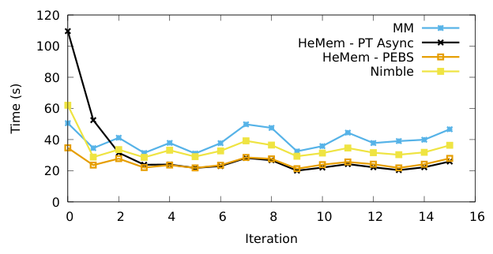
What it shows. Per-iteration runtime over 15 iterations of betweenness centrality on a Kronecker power-law graph with 2^29 vertices, which exceeds DRAM capacity, for MM, HeMem with PEBS, HeMem with asynchronous page-table scanning, and Nimble. HeMem (PEBS) and Nimble both outperform MM, by 58% and 16% respectively, by exploiting the page-level locality of neighboring vertices, which MM's cache-line granularity cannot capture. HeMem's page-table-scanning variant overestimates the hot set during early iterations and runs up to 3x slower than the PEBS variant there, converging to the same performance once the correct hot set is finally migrated. Placing the whole graph in NVM is 17x worse than any tiered configuration and is omitted from the figure.
What to take from it. Beyond the capacity boundary, what matters is migration granularity (page, which both HeMem and Nimble use) and how quickly the hot set is found; HeMem's PEBS sampling finds it faster than either Nimble's sequential scan-and-migrate or HeMem's own page-table-scanning variant.
HeMem cuts NVM writes by 10x versus MM by quickly isolating the small write-hot portion of the graph
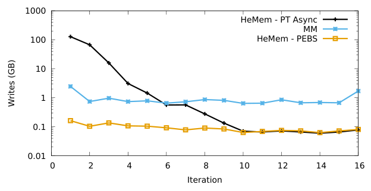
What it shows. NVM write counts per BC iteration on a log scale, for the 2^29-vertex graph, comparing MM, HeMem with PEBS, and HeMem with asynchronous page-table scanning. MM writes a roughly constant, large number of NVM bytes every iteration, since it cannot distinguish write-hot from write-cold data. HeMem (PEBS) quickly identifies the small write-hot subset of the graph's data structures and migrates it to DRAM, making 10x fewer NVM writes than MM per iteration thereafter. HeMem's page-table-scanning variant makes three orders of magnitude more NVM writes than PEBS during the early iterations it spends misclassifying the write-hot set, then converges to the same (low) write count once the set is correctly identified.
What to take from it. Because Optane endurance and write bandwidth are both scarce, correctly and quickly isolating write-heavy data is as valuable as finding read-hot data; this result is the paper's direct evidence for the write-heavy prioritization rule described in the How It Works tab.
FAQ
Q·What problem is HeMem actually solving?▾
Deciding, continuously and cheaply, which pages of a large application's memory belong in fast DRAM and which can tolerate slower, higher-capacity Optane NVM, without needing the application to be rewritten and without the overhead that made prior OS-based tiering fail to scale.
Q·Why not just use Intel's hardware Memory Mode and skip software tiering entirely?▾
Memory Mode needs no OS support, but it has no visibility into which process owns the data or how it is used, cannot prioritize one application over another, and its direct-mapped DRAM cache suffers more conflict misses as occupancy rises, which is exactly when a smarter policy would help most. The paper's GUPS and application results both show MM degrading as the working or hot set approaches DRAM's capacity, where HeMem does not.
Q·How is this different from Linux's Nimble NUMA-based tiering?▾
Nimble also moves pages between DRAM and NVM, exposed as NUMA nodes, but it identifies hot pages by scanning page table accessed and dirty bits on a single thread that also performs migrations. The paper measures this scan taking seconds at terabyte scale and shows that a slow migration on the same thread delays the next scan, causing Nimble to badly overestimate the hot set. HeMem instead samples hardware performance counters on a dedicated thread and migrates on a separate policy thread.
Q·What is PEBS, and why is it better than scanning page tables?▾
Processor Event-Based Sampling is a CPU feature that logs a record, including the faulting virtual address, to a memory buffer whenever a chosen performance counter overflows. HeMem configures it to sample loads served from NVM, loads served from DRAM, and stores. Because the CPU does the sampling work and software only drains a buffer, there is no need to walk page tables or shoot down TLB entries to reset access bits, which is what makes page-table scanning slow at large memory sizes.
Q·How does HeMem decide a page is hot enough to migrate?▾
Each tracked page accumulates separate read and write counts from PEBS samples. Once a page passes a threshold (8 load accesses or 4 store accesses in the prototype, tuned experimentally), it is marked hot and queued for possible migration to DRAM. Counts are periodically halved (cooling) so stale hotness fades; if a page's count drops back below the threshold after cooling, it is reclassified cold.
Q·Why does a "write-heavy" page get special treatment?▾
Optane's write bandwidth is a small fraction of DRAM's and saturates with only a handful of threads, while its read latency is much closer to DRAM's. A page that crosses the store-access threshold is flagged write-heavy and moved to the front of the migration queue, so it reaches DRAM ahead of merely read-hot pages. The NVM-write-count result (Result 7 in the Evaluation tab) is the paper's direct evidence that this matters.
Q·Does migrating a page disrupt the application using it?▾
Reads are allowed to continue during a migration. Only a concurrent write to the page being migrated stalls, waiting for the copy to finish, and the paper reports this happening on fewer than 0.00013% of writes in its most write-heavy benchmark. Copies are also offloaded to a DMA engine where available and rate-limited, so they do not consume the bandwidth applications need.
Q·Does an application need to be modified or recompiled to use HeMem?▾
No. HeMem is loaded via LD_PRELOAD and intercepts standard memory allocation calls such as mmap. All of the paper's application benchmarks (Silo, FlexKVS, GAP) run unmodified.
Q·What is userfaultfd and why does HeMem rely on it?▾
It is a Linux mechanism that lets a user-space process register a virtual address range and receive page faults for it directly, instead of having the kernel handle them. HeMem uses it both to serve brand-new pages from whichever memory tier its policy picks, and to write-protect a page during migration, so that a concurrent write is deferred rather than silently lost or racing the copy.
Q·Why does HeMem leave small allocations and kernel objects in DRAM instead of tiering everything?▾
NVM's larger media access granularity (256 bytes versus a 64-byte cache line) penalizes small, scattered objects more than large ones, and kernel objects tend to be small and short-lived, so there is little to gain and extra bookkeeping to lose by tiering them. HeMem instead focuses on the large, long-lived heap ranges where big data applications keep most of their memory.
Q·How much does HeMem reduce wear on the NVM device?▾
Up to 10 times fewer NVM writes than the next-best system in the paper's graph-processing experiment, by quickly isolating the small write-hot subset of data and keeping it in DRAM rather than letting repeated writes land on NVM, as a write-oblivious system like Memory Mode does.
Q·What happens if the truly hot set is bigger than DRAM?▾
HeMem detects that there are no cold DRAM pages left to swap out and stops migrating rather than thrashing pages back and forth. In this regime, the paper's results show all tiered systems converging to roughly NVM-only performance, since there is no good placement decision software can make that hardware cannot already approximate.
Q·How does HeMem relate to far-memory or disaggregated-memory systems like AIFM or Google's software-defined far memory?▾
Those systems classify and move data between local memory and a remote tier (another machine's memory, accessed over the network), and software-defined far memory in particular compresses cold pages before swapping them out. HeMem's slow tier is local Optane NVM rather than remote memory, reached by ordinary loads and stores rather than network requests, and it migrates at page granularity rather than the object granularity AIFM's specialized API exposes.